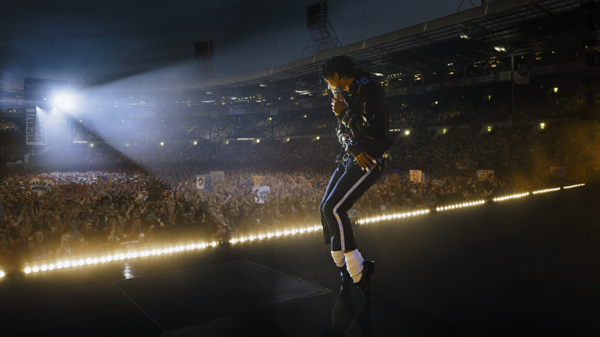
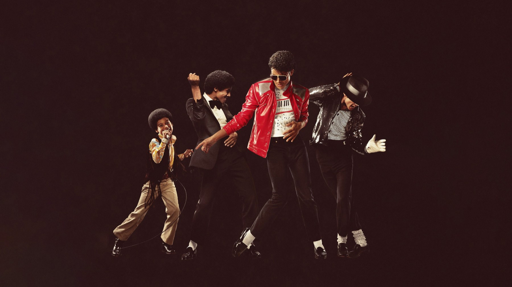
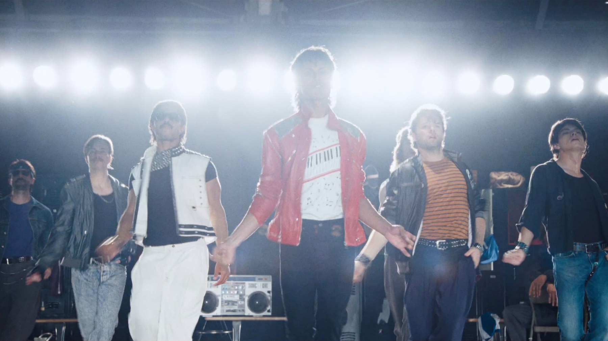
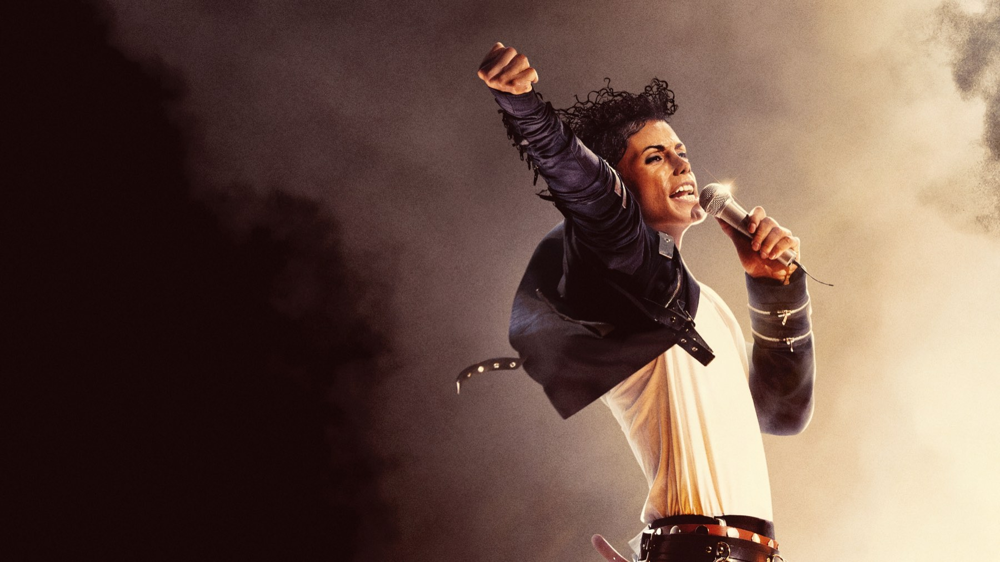

Michael
Jaafar Jackson è un'apparizione, i concerti fanno venire i brividi. Peccato che il film di Antoine Fuqua racconti solo metà della storia
Un ragazzo con la giacca rossa, uno stadio pieno fino all'ultima fila e quel passo all'indietro che tutti, almeno una volta, abbiamo provato a rifare in cucina. Michael, il biopic diretto da Antoine Fuqua e arrivato nelle sale italiane il 22 aprile 2026 con Universal Pictures, sa benissimo cosa vogliamo vedere. E ce lo dà, con una generosità quasi commovente. Il problema è tutto quello che sceglie di non mostrarci.
Lo diciamo subito: è un film che spacca in due critica e pubblico. Chi scrive di cinema per mestiere lo ha accolto con freddezza, mentre in sala le persone escono cantando: il sondaggio CinemaScore negli Stati Uniti gli ha dato una A−, e in Italia il debutto è stato da primo posto in classifica. Noi stiamo un po' nel mezzo, e proviamo a spiegare perché, senza spoiler.
Di cosa parla Michael?
Il film segue la vita di Michael Jackson dagli anni Sessanta a Gary, nell'Indiana, quando era la voce di punta dei Jackson 5, fino al Bad World Tour del 1988. In mezzo ci sono la Motown, la scelta di mettersi in proprio, gli album che hanno cambiato la musica pop e, soprattutto, il rapporto con il padre Joseph, che dei figli ha fatto una macchina da palcoscenico a colpi di disciplina e di paura.
A interpretare Michael da adulto c'è Jaafar Jackson, nipote del cantante e al suo esordio da protagonista; da bambino è Juliano Valdi. Colman Domingo è Joseph, Nia Long la madre Katherine, Miles Teller l'avvocato John Branca. La sceneggiatura è firmata da John Logan, la fotografia è di Dion Beebe. Tra i produttori, curiosamente, accanto a Graham King c'è proprio il vero John Branca: un dettaglio che dice molto sul punto di vista del film.

Jaafar Jackson: imitazione o interpretazione?
La risposta, ed è la notizia più bella del film, è la seconda. Il rischio era altissimo: affidare un ruolo del genere a un parente senza esperienza poteva trasformarsi in un numero da sosia. Invece Jaafar Jackson costruisce un personaggio vero. Owen Gleiberman su Variety sottolinea come l'attore non si limiti a riprodurre la voce sottile e un po' esitante dello zio, ma faccia vedere come quella personalità cambi negli anni. Anche chi stronca il film, come Tim Grierson su Screen, riconosce che i due interpreti di Michael ne catturano in modo credibile gesti e passi di danza.
La cosa che ci colpisce di più è il contrasto: timidissimo quando parla, quasi sussurrato, e poi una furia sul palco. È lì che Michael funziona davvero, perché il corpo di Jaafar racconta quello che la sceneggiatura non ha il coraggio di dire. Quando balla, il film smette di essere un santino e diventa cinema.
Quando Jaafar balla, il santino si incrina e Michael diventa finalmente cinema.
I concerti valgono il biglietto?
Sì, senza discussioni. Le ricostruzioni delle esibizioni sono il punto di forza su cui la critica concorda quasi all'unanimità: da Don't Stop 'Til You Get Enough a Beat It fino a Bad, Fuqua e Beebe mettono in scena i grandi momenti con una cura maniacale per costumi, luci e coreografie. Chiara Carnà su ComingSoon parla di una ricostruzione impeccabile, quasi filologica, e cita il moonwalk e la rievocazione di Thriller tra le sequenze più riuscite.

È il tipo di film che va visto in una sala con un buon impianto audio, perché metà dell'esperienza passa dalle orecchie. Certo, la struttura è quella classica del biopic musicale, con l'ascesa, gli ostacoli e il trionfo: chi ha visto Bohemian Rhapsody o Elvis sa già dove si va a parare. Ma quando parte la musica, è difficile restare fermi sulla poltrona.
Colman Domingo e il padre-padrone
Il cuore drammatico del film è il rapporto tra Michael e Joseph. Domingo lo interpreta come un uomo gelido e ossessionato dalla perfezione, e Fuqua è bravo a far vedere come quel perfezionismo, nato dalla paura, sia diventato anche il motore artistico del figlio. Qui la critica si divide: per molti è la parte più solida, per Grierson il personaggio a lungo andare diventa monocorde, il cattivo di turno di una favola.
Noi stiamo con i primi, ma capiamo la riserva: Joseph è l'unica vera ombra che il film si concede. E questo ci porta al problema principale.
Perché Michael non racconta tutta la storia?
Perché si ferma prima che diventi scomoda. Il film non affronta mai le accuse di abusi su minori che hanno segnato la vita di Jackson dagli anni Novanta in poi, e chiude la sua parabola sul trionfo. La storia produttiva spiega in parte questa scelta: le riprese principali si sono svolte tra il 22 gennaio e il 30 maggio 2024, poi il terzo atto è stato riscritto quando è emerso che l'accordo legale chiuso nel 1993 con la famiglia dell'accusatore vietava di citarlo. Nel giugno 2025 sono servite 22 giornate di riprese aggiuntive, con un budget complessivo stimato tra 155 e 200 milioni di dollari.
Il risultato è un ritratto levigato, in cui le fragilità di Michael restano accennate e mai indagate. Carnà lo riassume bene: il film sceglie il mito e lascia sullo sfondo l'uomo con le sue contraddizioni. Una parte della critica americana parla apertamente di amnesia collettiva e volontaria. Pesano anche le assenze: figure decisive come Quincy Jones e Diana Ross, nota una parte della critica italiana, restano fuori o quasi. Non pretendevamo un processo, ma un personaggio più complesso sì: senza ombre, anche la luce dei concerti finisce per sembrare un po' piatta.

Quanto ha incassato Michael?
Tantissimo, ed era prevedibile. In Italia ha debuttato al primo posto con 6.815.436 euro nei primi cinque giorni, di cui oltre 5,7 milioni nel solo weekend dal 23 al 26 aprile, in 650 sale. Negli Stati Uniti, dove è uscito il 24 aprile dopo l'anteprima mondiale del 10 aprile a Berlino, ha aperto con 97,2 milioni di dollari, il miglior debutto di sempre per un biopic musicale.
Aggiornamento di ottobre 2026: a fine corsa Michael ha superato 1,02 miliardi di dollari nel mondo e oltre 25,8 milioni di euro in Italia, mentre il 21 maggio 2026 è stato annunciato lo sviluppo di un seguito. Sugli aggregatori la critica è rimasta fredda: 38% di recensioni positive su Rotten Tomatoes e 39 su 100 su Metacritic. Il film è disponibile a noleggio e acquisto digitale su Apple TV, Prime Video, Rakuten TV e CHILI.
Vale la pena vederlo?
Se amate la musica di Michael Jackson, sì, e possibilmente al cinema: la prova di Jaafar e le esibizioni da sole valgono il biglietto. Se cercate un ritratto onesto di un artista enorme e controverso, invece, preparatevi a uscire con la sensazione che qualcuno abbia tagliato la seconda metà del libro. È un film costruito per piacere, e ci riesce; quello che non riesce a fare è sorprenderci.
Se da un lato Michael regala un Jaafar Jackson sorprendente e concerti da brividi, dall'altro è un biopic prudente e levigato, che sceglie il mito e lascia fuori l'uomo. Un grande spettacolo a cui manca il coraggio.
Domande frequenti
Chi interpreta Michael Jackson nel film Michael?
Jaafar Jackson, nipote del cantante, al suo esordio da protagonista; Michael da bambino è Juliano Valdi.
Il film Michael parla delle accuse contro Michael Jackson?
No. Il racconto si ferma all'epoca di Bad, alla fine degli anni Ottanta, e il terzo atto è stato riscritto anche per vincoli legali legati all'accordo del 1993.
Dove vedere Michael in streaming?
A ottobre 2026 è disponibile a noleggio e acquisto digitale su Apple TV, Prime Video, Rakuten TV e CHILI.
Fonti consultate (9)
- Wikipedia – Michael (2026 film)
- Wikipedia – Michael (film 2026)
- Variety – Michael review (Owen Gleiberman)
- Screen International – Michael review (Tim Grierson)
- ComingSoon.it – Michael, la recensione (Chiara Carnà)
- Looper – Michael review (Dominic Griffin)
- Madmass – Michael, recensione
- BoxOfficeBiz – Box office Italia, il debutto di Michael
- JustWatch – dati sulla disponibilità in streaming (via TMDB)